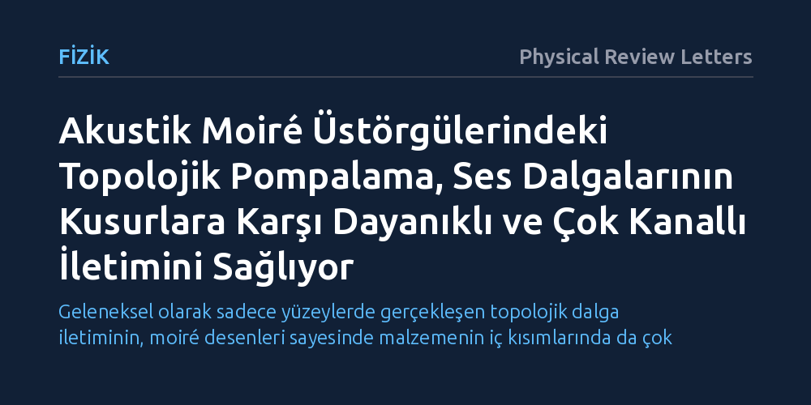

FIZIK · Physical Review Letters · 2026-10-25
Araştırmacılar, akustik moiré üstörgülerindeki yerelleşmiş durumları kullanarak ses dalgalarını topolojik pompalama yöntemiyle yönlendirmeyi denedi. Deneyler, sesin kusurlu yollarda dahi dağılmadan, bağımsız çoklu kanallar üzerinden kararlı bir biçimde iletilebildiğini doğrudan kanıtladı.
Geleneksel olarak sadece yüzeylerde gerçekleşen topolojik dalga iletiminin, moiré desenleri sayesinde malzemenin iç kısımlarında da çok kanallı ve kusurlara dayanıklı şekilde yapılabileceğini gösteriyor.

Modern teknolojide ses, ışık ya da radyo dalgalarını belirli bir doğrultuda, biçimini ve enerjisini kaybetmeden iletmek en temel hedeflerden biridir. Ancak dalgalar bir ortamda ilerlerken karşılaştıkları pürüzlere, engellere ya da yapısal kusurlara çarptıklarında kolayca geri saçılarak zayıflar. Bu saçılma ve bozulma sorunu, iletişim sistemlerinde veri kaybına yol açarken akustik algılayıcıların ve sinyal işleme aygıtlarının hassasiyetini sınırlar.
Fizikçiler son yıllarda bu sorunu aşmak için "topolojik koruma" ilkelerine yöneldiler. Topoloji, bir nesnenin bükülse veya esnetilse bile korunan temel geometrik özelliklerini inceler; dalga fiziğine uyarlandığında ise dalgaların ortamdaki kusurlardan etkilenmeden yollarına devam etmesini sağlar. Ne var ki bugüne kadar geliştirilen topolojik dalga iletimi yöntemleri neredeyse tamamen malzemelerin kenarları veya sınır çizgileriyle kısıtlı kalmıştı.
Araştırmacılar, dalga iletimini sadece sınırlarla sınırlı tutmayıp malzemenin iç kısımlarına taşımak amacıyla iki periyodik yapının üst üste bindirilmesiyle oluşan "moiré üstörgüleri"ni akustik dalgalara uyarladı. Günlük hayatta iki ince tül örtüştüğünde beliren hare desenlerine benzeyen bu yapılar, dalgaların malzemenin iç bölgelerinde hapsedilip yönlendirilmesine imkân tanıyan özel fiziksel durumlar oluşturur.
Deney ekibi, akustik moiré üstörgülerinde değişim boyunca korunan sabit bir frekans aralığı oluşturarak dalgaları "topolojik pompalama" yöntemiyle hareket ettirdi. Bu yaklaşımda sistemin geometrik parametreleri periyodik olarak değiştirilerek hapsedilmiş ses dalgaları adım adım hedeflenen doğrultuya aktarılır. İletimin başarısı, ses alanlarının uzamsal olarak taranması ve sesin ortam içindeki yayılımının doğrudan görüntülenmesiyle incelendi.
Yapılan ölçümler, ses dalgalarının malzemenin iç kısımlarında oluşturulan kompakt ve birbirinden neredeyse tamamen bağımsız çoklu kanallar üzerinden başarıyla aktarıldığını gösterdi. İletim yolları üzerine kasten yapısal kusurlar ve engeller yerleştirildiğinde dahi ses akışının bu bozulmalardan etkilenmediği, topolojik koruma sayesinde dalgaların geri saçılmadan yoluna kararlılıkla devam ettiği kaydedildi.
Bunun yanı sıra taşıma kanallarının modülasyonu sayesinde ses dalgalarında olağandışı kırılma, demetlerin farklı kollara ayrılması ve sarmal (helisite) hareketlerle iletim gibi zengin dalga davranışları deneysel olarak gözlemlendi. Bu bulgular, moiré yapılarındaki topolojik pompalamanın yalnızca basit bir iletim hattı olmadığını, sesin yönünü ve geometrik özelliklerini hassas şekilde biçimlendirebilen esnek bir kontrol mekanizması sunduğunu kanıtladı.
Elde edilen sonuçlar, dalgaların malzemenin sadece dış yüzeylerinde değil, tüm hacmi boyunca çok kanallı olarak yönlendirilebileceğini doğrulamaktadır. Bu kabiliyet, çok daha küçük alanlara birbirini etkilemeyen çok sayıda bağımsız iletim hattının sığdırılabilmesi anlamına gelir. Özellikle ses temelli mantık kapıları, minyatür akustik filtreler ve parazitsiz akustik aygıtlar için bu mimari yeni tasarım olanakları yaratmaktadır.
Çalışma mevcut aşamada makro ölçekli laboratuvar deneyleriyle sınırlı olsa da, ulaşılan temel prensiplerin mikro ölçekli akustik cihazlara ve hatta optik sistemlere uyarlanması hedeflenmektedir. Ses dalgalarını kusurlardan etkilenmeksizin yönlendirebilmek, gelecekte yüksek yoğunluklu bilgi işleme ve gürültüye dayanıklı iletişim altyapılarının geliştirilmesine katkı sağlayabilir.